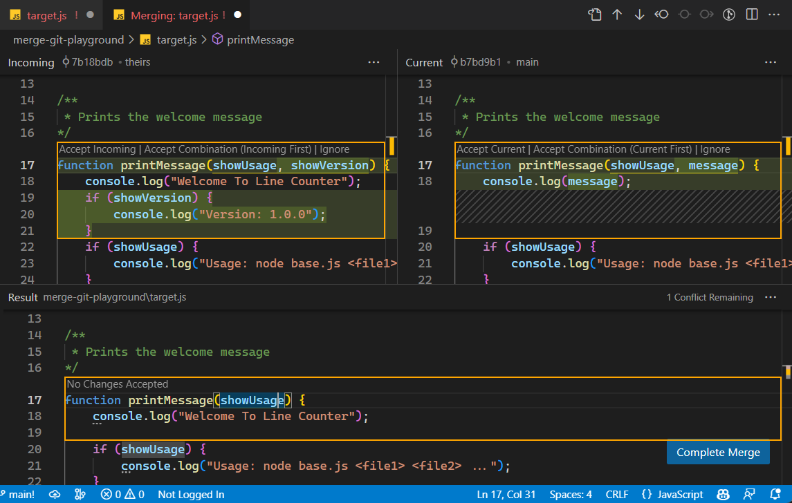

Branching
Branching in Git is a powerful feature that allows developers to diverge from the main line of development (usually referred to as the master branch) and work on separate, isolated lines of development. Each branch represents an independent line of development, enabling multiple features, fixes, or experiments to be worked on simultaneously without interfering with each other. Branching can be a crucial part of software development, as it allows teams to work collaboratively on different features or fixes simultaneously while maintaining a clear and organized codebase. Isolating work in branches, changing context, and integrating changes into the main line of development can help streamline the development process and improve collaboration.
What are Branches?
A branch in Git is simply a lightweight movable pointer to one commit. The default branch name in Git is master. As you start making commits, you’re given a master branch that points to the last commit you made. Every time you commit, the master branch pointer moves forward automatically. The pointer HEAD tells you where you are in the repository. When you switch branches, HEAD moves to the tip of the new branch.

Main Branches
-
Master Branch: By convention, the
masterbranch is often used to represent the main line of development. It typically contains stable, production-ready code. -
Main Branch (Post-Git 2.28): Some projects have adopted renaming the default branch from
mastertomain. Themainbranch serves the same purpose as themasterbranch, but the naming convention aims to promote more inclusive language.
Creating Branches
- Creating a New Branch: To create a new branch, use the
git branch <branch-name>command. Optionally, you can switch to the new branch immediately withgit checkout -b <branch-name>orgit switch -c <branch-name>.
git branch feature-branch
- Switching Branches: To switch between branches, use the
git checkout <branch-name>command orgit switch <branch-name>.
1. git checkout
git checkout feature-branch
2. git switch
Introduced in Git version 2.23, git switch is specifically designed for branch switching. It offers a more intuitive and safer way to switch branches compared to git checkout.
git switch <branch-name>
- Both
git switchandgit checkoutare used for switching branches in Git. git switchis specifically designed for branch switching and offers a safer and more intuitive experience compared togit checkout.- While
git checkoutremains a versatile command for various Git operations,git switchis recommended for branch switching to promote consistency and safety in your workflow.
git checkout is a multi-purpose tool, capable of switching branches, discarding changes, and even creating new branches. Conversely, git switch is more specialized, focusing solely on switching and creating branches.
Viewing Branches
- Listing Branches: To list all branches in the repository, use the
git branchcommand.
git branch
*) in the output indicates that the branch you are currently on is the currently active branch.
The git branch -a command is used to list all branches in a Git repository, including both local branches and remote branches.
git branch -a
-
git branch: This is the Git command used to manage branches in a repository. -
-a(or--all): This option tells Git to list both local branches and remote branches.
When you run git branch -a, Git will list all branches in the repository, including:
- Local Branches: Branches that exist only in your local repository.
- Remote Branches: Branches that exist on the remote repository (e.g., on GitHub, GitLab).
- Remote Tracking Branches: Local representations of remote branches, used for tracking changes from the remote repository.
The output typically looks like this:
* main
feature-branch
remotes/origin/HEAD -> origin/main
remotes/origin/main
remotes/origin/feature-branch
- The branches listed without the
remotes/prefix are local branches. - The branches listed with the
remotes/prefix are remote branches. originis the default name for the remote repository, but you may see other names if you have multiple remotes configured.
Useful flags
To display information about branches, you can use the following flags:
-v, --verbose: Displays additional information about each branch, showing the commit message or commit SHA of the last commit on each branch.-vv: Displays more verbose information about each branch, including tracking information.-l, --list: Lists branches matching the given pattern.-a, --all: Lists all branches in the repository, including local and remote branches.-r, --remote: Lists only remote branches.
To manage branches, you can use the following flags:
-d, --delete: Deletes the specified branch.-D: Shortcut for--delete --force. Deletes the specified branch forcibly, even if it has unmerged changes.-
-m, --move: Renames the specified branch locally.# Rename the branch locally git branch --move bad-branch-name corrected-branch-name # Push the branch to the remote repository git push --set-upstream origin corrected-branch-name # delete bad branch in the remote repository git push origin --delete bad-branch-name -
-c, --copy: Copies the specified branch.
To filter branches, you can use the following flags:
--merged: Lists only branches that have been merged into the current branch.--no-merged: Lists only branches that have not been merged into the current branch.--contains: Lists only branches that contain the specified commit.--no-contains: Lists only branches that do not contain the specified commit.--points-at: Lists only branches that point at the specified commit.--no-points-at: Lists only branches that do not point at the specified commit.
--merged and --no-merged will, if not given a commit or branch name as an argument, show you what is, respectively, merged or not merged into your current branch. But if you provide an additional argument to ask about the merge state with respect to some other branch without checking that other branch out first, as in, what is not merged into the master branch?
git branch --no-merged master
Merging Branches
Let's do another commit on the feature-branch branch.

We will want eventually to merge this commit into the main branch. However, other collaborators are working on the other features (hotfixes) and create another branch for a hotfix.
Fast-forward merges
To merge changes from one branch into another, use the git merge <branch-name> command.
However you have to first checkout to the branch you want to merge into.
git checkout master

git merge hotfix-branch

You’ll notice the phrase “fast-forward” in that merge. Because the commit pointed to by the branch hotfix (d45a6) you merged in was directly ahead of the commit (fe456) you’re on, Git simply moves the pointer forward. Git simplifies things by moving the pointer forward because there is no divergent work to merge together — this is called a “fast-forward”.
Deleting Branches
Now, that the hotfix branch is no longer needed, we can delete it.
To delete a branch, use the git branch -d <branch-name> command.
git branch -d hotfix-branch
Recursive merge
Now we can switch back to our work-in-progress branch in order to continue working on our project.
git checkout feature-branch
As you can see, now there is a divergent work to merge. Because the commit on the branch you’re on isn’t a direct ancestor of the branch you’re merging in. To merge merge changes into the master branch, we must first switch to the master branch. then we can merge the feature branch into the master branch.
git checkout master
then
git merge feature-branch

Now that our work is merged in, we have no further need for the feature branch. We can close the issue in the issue-tracking system, and delete the branch:
git branch -d feature-branch
Merging conflicts
If you changed the same part of the same file differently in the two branches you’re merging, Git won’t be able to merge them cleanly. In this case, you’ll see a merge conflict in the output, and Git will tell you which files you need to resolve the conflict with. Git hasn’t automatically created a new merge commit. It has paused the process while you resolve the conflict. If you want to see which files are unmerged at any point after a merge conflict, you can run git status.
git status
Merge conflicts are recognized by VS Code. Differences are highlighted and there are inline actions to accept either one or both changes. These inline actions are shown in the editor at the top of the merge conflict. Once the conflicts are resolved, stage the conflicting file so you can commit those changes.

This resolution of the merge conflict needs to be done in Git. The <<<<<<<<<, =======, and >>>>>>> lines need to be completely removed. After you’ve resolved each of these sections in each conflicted file, run git add on each file to mark it as resolved. Staging the file marks it as resolved in Git.
If you want to use a graphical tool to resolve these issues, you can run git mergetool, which fires up an appropriate visual merge tool and walks you through the conflicts. After you exit the merge tool, Git asks you if the merge was successful. If you tell the script that it was, it stages the file to mark it as resolved for you. You can run git status again to verify that all conflicts have been resolved. If you’re happy with that, and you verify that everything that had conflicts has been staged, you can type git commit to finalize the merge commit.
3-way merge editor
To help you resolve merge conflicts, VS Code provides a 3-way merge editor where you can interactively accept incoming and current changes and view and edit the resulting merged file. The 3-way merge editor is opened by selecting the Resolve in Merge Editor button in the bottom right corner of a file with Git merge conflicts. The 3-way merge editor displays separate views for Incoming changes (on the left), Current changes (on the right), and the Result of the merge (at the bottom). Conflicts are highlighted and can be resolved by using the CodeLens buttons.

The 3-way merge editor allows you to resolve conflicts by accepting either one or both changes. You can also manually edit the result of the merge.
For some conflicts, the merge editor shows an Accept Combination button. Accepting the combination resolves the current conflict by smartly merging both changes. This is especially useful for changes in the same line that don't touch the same characters.
Use the Ignore buttons to accept neither the incoming nor current change, but mark the conflict as resolved. This resets the conflicting area to the state before any changes were made.
You can use the conflict counter in the right of the result editor to keep track of how many unresolved conflicts are remaining. Clicking on the counter jumps to the next unresolved conflict. Once all conflicts are resolved, you can complete the merge by selecting Complete Merge in the bottom right corner. This stages the file and closes the merge editor.
Selecting the three dots (···) in the top right corner of the merge editor opens a context menu with additional options. You can switch to a vertical layout and display the base view, which shows the state of the file before any changes were made.
The three dots next to Incoming, Current, and Result offer options for each view, such as showing a side-by-side diff against base, accepting all changes, or resetting the result.
Branching Strategies
Git encourages workflows that branch and merge often, even multiple times in a day. Understanding and mastering this feature gives you a powerful and unique tool and can entirely change the way that you develop. The way Git branches is incredibly lightweight, making branching operations nearly instantaneous, and switching back and forth between branches generally just as fast.
-
Feature Branching: Create a separate branch for each new feature or task. This isolates changes related to specific features, making them easier to manage and review.
-
Release Branching: Create branches for each release to stabilize the codebase before deployment.
-
Hotfix Branching: Create branches to fix critical issues in production code quickly.
Branching Best Practices
-
Use Descriptive Names: Choose meaningful names for branches to indicate their purpose or associated feature.
-
Keep Branches Short-Lived: Merge branches into the main line of development once their purpose is served to avoid branch clutter.
-
Regularly Update Branches: Keep branches up-to-date with changes in the main line of development by frequently merging or rebasing.
-
Review Branches: Encourage code review and collaboration by reviewing changes made in feature branches before merging them.
Remote Branches
- Pushing a Branch: To push a local branch to a remote repository, use the
git push <remote-name> <branch-name>command.
git push origin feature-branch
- Tracking Remote Branches: After pushing a branch to the remote repository, it can be tracked. This means Git remembers the relationship between the local branch and its corresponding remote branch.
git checkout -b feature-branch origin/feature-branch
The git branch --set-upstream-to command is used to set up the tracking relationship between a local branch and a remote branch. This command tells Git which remote branch the local branch should track, allowing you to push and pull changes to and from the correct remote branch without specifying it each time.
git branch --set-upstream-to=<remote>/<branch>
<remote>: The name of the remote repository.<branch>: The name of the remote branch.
git branch --set-upstream-to=origin/main
This command sets the tracking relationship for the current branch to the specified remote branch (main in this example) in the origin remote repository.
After running this command, Git knows that when you push or pull changes from the current branch, it should interact with the main branch in the origin remote repository.
Syncing Changes After setting up tracking, you can simply use git push and git pull without specifying the remote branch, as Git already knows where to push and pull changes from.
- This command can also be used in combination with
git push -uorgit push --set-upstreamto set up tracking and push changes to the remote branch in one step.
Rebasing
In Git, there are two main ways to integrate changes from one branch into another: the merge and the rebase.
The Basic Rebase
The merge command performs a three-way merge between the two latest branch snapshots (d45a6 and a615b) and the most recent common ancestor of the two (fe456), creating a new snapshot (and commit 1ac5b).
However, there is another way: you can take the patch of the change that was introduced in a615b and reapply it on top of d45a6. In Git, this is called rebasing. With the rebase command, you can take all the changes that were committed on one branch and replay them on a different branch.
This operation works by going to the common ancestor of the two branches (the one you’re on and the one you’re rebasing onto), getting the diff introduced by each commit of the branch you’re on, saving those diffs to temporary files, resetting the current branch to the same commit as the branch you are rebasing onto, and finally applying each change in turn.
git checkout feature-branch
git rebase master

At this point, you can go back to the master branch and do a fast-forward merge.
git checkout master
git merge feature-branch
Rebasing makes for a cleaner history. If you examine the log of a rebased branch, it looks like a linear history: it appears that all the work happened in series, even when it originally happened in parallel.
--onto flag
The --onto flag in the git rebase command is used to specify a new base (or starting point) for the rebase operation. This flag allows you to reapply a series of commits onto a different branch or commit, effectively changing the parent of the commits being rebased.
git rebase --onto <new_base> <old_base> <branch>
<new_base>: Specifies the new base commit or branch where you want the series of commits to be reapplied.<old_base>: Specifies the original base commit or branch from which the series of commits should be moved.<branch>: Specifies the branch containing the commits you want to rebase.
Steps:
-
Identify the Commits to Rebase: The rebase operation will take the commits from
<old_base>up to (but not including) the current branch's tip. -
Detach the Commits: The commits to be rebased are temporarily detached from their original base.
-
Apply the Commits to the New Base: The detached commits are then applied one by one on top of the
<new_base>. -
Reattach the Branch: Finally, the branch pointer is moved to the last commit that was applied, completing the rebase operation.
Use Cases:
- Restructuring Commit History: You can use
--ontoto move a series of commits from one branch to another, effectively restructuring the commit history. - Creating Feature Branches: If you started working on a feature branch from the wrong starting point, you can use
--ontoto rebase your changes onto the correct branch or commit.
Example:
Suppose you have the following commit history:
A -- B -- C (feature)
/
... -- X -- Y -- Z (master)
To move commits B and C from the feature branch onto master, you can use:
git rebase --onto master feature~2 feature
After the rebase, the commit history would look like:
B' -- C' (feature)
/
... -- X -- Y -- Z -- A -- B -- C (master)
In this example, B' and C' represent the rebased commits on the feature branch, applied on top of the master branch. The original B and C commits are effectively moved onto the master branch.
Notes:
-
Always exercise caution when using
git rebase, especially with--onto, as it rewrites commit history. -
Make sure you understand the implications of rebasing and its potential impact on collaboration and shared branches.
-
Do not rebase commits that exist outside your repository and that people may have based work on. When you rebase stuff, you’re abandoning existing commits and creating new ones that are similar but different. If you push commits somewhere and others pull them down and base work on them, and then you rewrite those commits with git rebase and push them up again, your collaborators will have to re-merge their work and things will get messy when you try to pull their work back into yours.